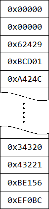
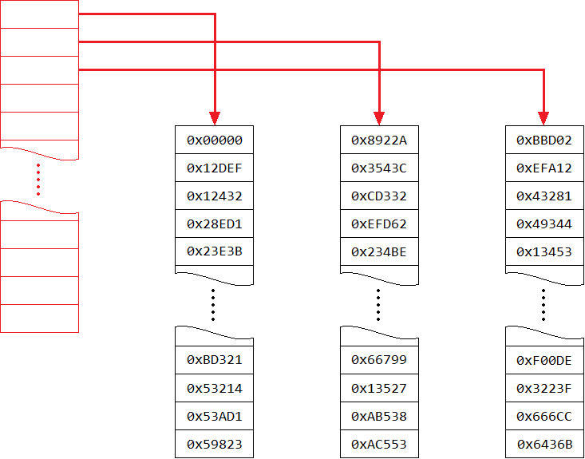
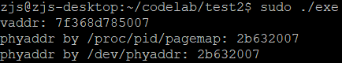

在《Linux 获取虚拟地址对应的物理地址》中我描述了在用户态使用/proc/<pid>/pagemap来获取虚拟地址对应的物理地址的方法。当时我提到，在内核里解析页表会很复杂，而且不同的硬件架构可能很不一样。现在，当我知道了页表的结构后，发现我说错了。其实页表的结构很简洁明了，而且Linux进行了巧妙地封装，屏蔽了硬件架构的不同。需要明确的是，不同的硬件架构上，页面都是层级结构的，尽管层数可能不同。
我一点点来解释我的理解吧。最最原始的想法是，页表就是一张超级大的表。以32位机器为例，其地址空间是4GB，每一个页是4KB，那么至多1M个页。如果每一个页表项使用一个32位整数表示，那么页表就需要1M * 4B = 4MB。如下图：

在这种设计下，一个进程的页表就是一个有1M个元素的数组。要查看某个虚拟页框对应的物理页框，只需要查表即可。比如我想知道虚拟地址0x2328对应的物理地址，那么首先得到0x2328 = 2 * 4096 + 0x328，即虚拟页框号为2，页内偏移0x328。查询图中的表，第2个元素是0x62429，也就是物理页框号是0x62429。那么物理地址就是0x62429 * 4096 + 0x328 = 0x62429328。很简单吧？！
但是，这种设计是有明显问题的。一维数组必须是在内存上连续的，而且，这里的连续是指物理内存上的连续（因为页表的访问不可能再通过页表做虚拟地址转换）。我们知道的是，随着系统的运行，物理内存碎片化会越来越严重，到后来几乎不可能分配出这么大块的连续物理内存。因此，这么“简单直白”的页表是难以实现的。
那么，既然一维的页表不可行，能不能弄成二维的呢？页表第一维的每一个元素是一个指向一维数组的指针。仍以32位机器为例，页大小4KB（即12位），页框号是32 - 12 = 20位。把这20位拆分成两段，前面的10位与后面的10位各一段。这样，第一维共有2 ^ 10 = 1024项，第二维的每一个数组也是2 ^ 10 = 1024项。于是该二维页表如下图：

第一维的数组包含了1024个指针，32位机器上每个指针4B，所以图中红色的数组大小为4KB，刚好一页。第二维的每一个数组包含了1024个页表项，每一个页表项4B，所以图中黑色的数组大小也是4KB，刚好一页。于是惊喜地发现，使用二维页表后，页表可以使用离散的物理页来构成了，而不需要像之前那样占用很大的连续物理页。事实上，这也正是ARM架构所采用的二级页表~
二维页表的查询稍微复杂些，但是依旧很简单。比如我想得知虚拟地址0x403ABC对应的物理地址。那么首先得到0x403ABC = 1027 * 4096 + 0xABC，即虚拟页框号是1027，页内偏移量是0xABC。虚拟页框号1027 = 1 * 1024 + 3，即其对应第1个二级页表中第3个页表项。图中中间那个黑色二级页表的第3项是0xEFD62。所以物理地址就是0xEFD62 * 4096 + 0xABC = 0xEFD62ABC。
那么，在64位机器上，地址空间非常巨大，二级页表也遇到了“占用很多连续内存页”的问题，所以如法炮制——用三级、四级甚至五级页表，总归可以把页表拆成离散的页。而且，使用多级页表的另一个好处是，很多没有映射的虚拟地址不需要创建次级页表，直接在上级页表中留一个空指针即可，于是页表就成了一个多维稀疏数组，节省很多空间。
这里需要明确的一点是，使用几级页表、每一级页表占用多少连续页、包含多少项，都是硬件决定的。当软件根据硬件要求构建好页表之后，查询页表的工作都是由硬件自动完成的，不需要软件介入。换句话说，CPU会自己解析虚拟地址，然后顺着每一级页表的指针找到下一级页表，然后再找到下下级页表，最终找到页表项。
但是，如果软件需要主动查询甚至修改页表项呢？难道也要为不同的硬件架构编写不同的代码？Linux为了兼容，在软件上做了封装，使得不管在什么硬件架构上，页表操作都是统一的。过去Linux统一使用3级页表，后来统一使用4级页表，到了最近则使用了5级页表。我们就以4级页表为例。第一级称为PGD，第二级称为PUD，第三级称为PMD，第四级称为PTE（也就是最终的页表项）。
在IA64架构上，虽然是64位架构，但是真正可寻址的地址空间是48位，即256TB。由于最后的12位是页内偏移量，所以页框号是48 - 12 = 36位。巧的是，IA64在硬件上也恰好用的是4级页表，每一级管理9位。第一级页表共有512个指针，指向512个第二级页表。每一个第二级页表包含512个指针，指向512个第三级页表。每一个第三级页表包含512个指针，指向512个第四级页表。每一个第四级页表包含512个页表项。
既然硬件上和软件上都采用的4级页表，那么最好办了！当给定一个虚拟地址时，把第(48, 39]这9位当作一个整数索引，查询第一级页表（PGD），得到一个第二级页表（PUD）的指针。 接着把第(39, 30]这9位当作一个整数索引，查询该第二级页表（PUD），得到一个第三级页表（PMD）的指针。然后把第(30, 21]这9位当作一个整数索引，查询该第三级页表（PMD），得到一个第四级页表（PTE）的指针。最后把第(21, 12]这9位当作一个整数索引，查询该第四级页表（PTE），得到页表项，即物理页框号。整个过程如下图所示：

于是代码如下：
unsigned long user_addr_to_phy_addr(unsigned long address)
{
pgd_t* pgd;
pud_t* pud;
pmd_t* pmd;
pte_t* pte;
struct mm_struct *mm = current->mm;
pgd = pgd_offset(mm, address);
if(pgd_none(*pgd) || pgd_bad(*pgd))
return 0;
pud = pud_offset(pgd, address);
if(pud_none(*pud) || pud_bad(*pud))
return 0;
pmd = pmd_offset(pud, address);
if(pmd_none(*pmd) || pmd_bad(*pmd))
return 0;
pte = pte_offset_kernel(pmd, address);
if(pte_none(*pte))
return 0;
return (pte_val(*pte) & PTE_PFN_MASK) | (address & ~PAGE_MASK);
}
那么问题来了，有些硬件架构只有三级页表，上述代码还能工作吗？当然可以，这就是Linux的设计的巧妙之处。假设某种硬件架构上，对于36位页框号，划分成12 + 12 + 12三级结构。那么Linux可以舍弃PUD或者PMD中任意一个。使用pgd_offset()时，把第(48, 36]位当作一个整数索引去查第一级页表，得到第二级页表的指针。使用pud_offset()时，把第(36, 24]位当作一个整数索引去查第二级页表，得到第三级页表的指针。使用pmd_offset()时，pmd_offset什么也不做，就把传入的第三级页表指针原样传出，相当于在说逻辑上的PMD在物理上不存在。最后使用pte_offset_kernel()时，把第(24, 12]位当作一个整数索引去查第三级页表，得到页表项。
结论就是，只要Linux逻辑上的页表级数不小于硬件上的页表级数，就能够通过针对不同的硬件架构实现不同的xxx_offset()函数来封装硬件差异。
知道了页表的结构之后，查找页表项就变得很容易了。由于最新的Linux kernel已经采用了五级页表了，就附上最新的user_addr_to_phy_addr()作为例子吧：
unsigned long user_addr_to_phy_addr(unsigned long address)
{
pgd_t* pgd;
p4d_t* p4d;
pud_t* pud;
pmd_t* pmd;
pte_t* pte;
struct mm_struct *mm = current->mm;
pgd = pgd_offset(mm, address);
if(pgd_none(*pgd) || pgd_bad(*pgd))
return 0;
p4d = p4d_offset(pgd, address);
if(p4d_none(*p4d) || p4d_bad(*p4d))
return 0;
pud = pud_offset(p4d, address);
if(pud_none(*pud) || pud_bad(*pud))
return 0;
pmd = pmd_offset(pud, address);
if(pmd_none(*pmd) || pmd_bad(*pmd))
return 0;
pte = pte_offset_kernel(pmd, address);
if(pte_none(*pte))
return 0;
return (pte_val(*pte) & PTE_PFN_MASK) | (address & ~PAGE_MASK);
}
写一个如下的phyaddr.c试验一下：
#include <linux/fs.h>
#include <linux/mm.h>
#include <linux/sched.h>
#include <linux/module.h>
#include <linux/uaccess.h>
#define MODULE_MAJOR 224
#define MODULE_NAME "phyaddr"
#define IOCTL_CMD_GET_PHYADDR 1234
unsigned long user_addr_to_phy_addr(unsigned long address)
{
pgd_t* pgd;
p4d_t* p4d;
pud_t* pud;
pmd_t* pmd;
pte_t* pte;
struct mm_struct *mm = current->mm;
pgd = pgd_offset(mm, address);
if(pgd_none(*pgd) || pgd_bad(*pgd))
return 0;
p4d = p4d_offset(pgd, address);
if(p4d_none(*p4d) || p4d_bad(*p4d))
return 0;
pud = pud_offset(p4d, address);
if(pud_none(*pud) || pud_bad(*pud))
return 0;
pmd = pmd_offset(pud, address);
if(pmd_none(*pmd) || pmd_bad(*pmd))
return 0;
pte = pte_offset_kernel(pmd, address);
if(pte_none(*pte))
return 0;
return (pte_val(*pte) & PTE_PFN_MASK) | (address & ~PAGE_MASK);
}
static long ioctl(struct file* file, unsigned int cmd, unsigned long arg)
{
if(cmd == IOCTL_CMD_GET_PHYADDR)
{
unsigned long user_addr, phy_addr;
if(copy_from_user(&user_addr, (void*)arg, sizeof(unsigned long)) != 0)
return -EINVAL;
phy_addr = user_addr_to_phy_addr(user_addr);
if(copy_to_user((void*)arg, &phy_addr, sizeof(unsigned long)) != 0)
return -EINVAL;
return 0;
}
return -EINVAL;
}
static struct file_operations fops =
{
.owner = THIS_MODULE,
.unlocked_ioctl = ioctl,
};
static int init(void)
{
int ret;
if((ret = register_chrdev(MODULE_MAJOR, MODULE_NAME, &fops)) < 0)
{
printk("Unable to register device '%s'\n", MODULE_NAME);
return ret;
}
return 0;
}
static void cleanup(void)
{
unregister_chrdev(MODULE_MAJOR, MODULE_NAME);
}
module_init(init);
module_exit(cleanup);
MODULE_LICENSE("Dual BSD/GPL");
千年不变的Makefile:
obj-m := phyaddr.o KERNEL_DIR := /lib/modules/$(shell uname -r)/build PWD := $(shell pwd) all: make -C $(KERNEL_DIR) SUBDIRS=$(PWD) modules clean: rm -f *.o *.ko *.mod.c .PHONY: clean
然后编译、插入模块：
make insmod phyaddr.ko mknod /dev/phyaddr c 224 0
之后使用一个test.c来测试：
#include <fcntl.h>
#include <stdio.h>
#include <assert.h>
#include <stdint.h>
#include <stdlib.h>
#include <string.h>
#include <unistd.h>
#include <sys/mman.h>
#include <sys/ioctl.h>
#define PAGE_SIZE 4096
#define IOCTL_CMD_GET_PHYADDR 1234
size_t virtual_to_physical(size_t addr)
{
int fd = open("/proc/self/pagemap", O_RDONLY);
if(fd < 0)
{
printf("open '/proc/self/pagemap' failed!\n");
return 0;
}
size_t pagesize = getpagesize();
size_t offset = (addr / pagesize) * sizeof(uint64_t);
if(lseek(fd, offset, SEEK_SET) < 0)
{
printf("lseek() failed!\n");
close(fd);
return 0;
}
uint64_t info;
if(read(fd, &info, sizeof(uint64_t)) != sizeof(uint64_t))
{
printf("read() failed!\n");
close(fd);
return 0;
}
if((info & (((uint64_t)1) << 63)) == 0)
{
printf("page is not present!\n");
close(fd);
return 0;
}
size_t frame = info & ((((uint64_t)1) << 55) - 1);
size_t phy = frame * pagesize + addr % pagesize;
close(fd);
return phy;
}
int main()
{
char* base = mmap(NULL, PAGE_SIZE, PROT_READ | PROT_WRITE, MAP_PRIVATE | MAP_ANONYMOUS, -1, 0);
assert(base != MAP_FAILED);
strcpy(base, "hello");
size_t vaddr = (size_t)base + 7;
printf("vaddr: %lx\n", vaddr);
printf("phyaddr by /proc/pid/pagemap: %lx\n", virtual_to_physical(vaddr));
int fd = open("/dev/phyaddr", O_RDWR);
assert(fd > 0);
size_t phyaddr = vaddr;
int ret = ioctl(fd, IOCTL_CMD_GET_PHYADDR, &phyaddr);
assert(ret == 0);
printf("phyaddr by /dev/phyaddr: %lx\n", phyaddr);
return 0;
}
gcc -std=gnu99 test.c -o exe ./exe
可以看到/proc/self/pagemap与/dev/phyaddr给出的结果是一致的：
